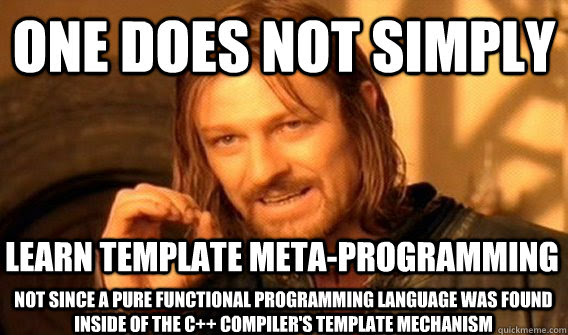

Template Metaprogramming with Modern C++: Introduction
Any sufficiently complex C++ code is indistinguishable from trolling
Arthur C. Clarke
Preface
Template metaprogramming is one of the things that makes C++ that complex, poor known, and sometimes horrible language. However, its power and expressiveness are some of the best features of C++.
Extensible and fully generic C++ libraries aren’t possible without template metapogramming. Even the Standard Library implementations hide many template metaprogramming tricks to make standard containers and algorithms that generic, high level, and efficient tools we use everyday.
The fact that tmp is a powerful tool can be seen in the evolution of the language, which now has features designed to improve metaprogramming, see C++11 <type_traits>, C++11 variadic templates, C++14 variable templates, C++14std::integer_sequence, etc.
Credit: https://gitorious.org/metatrace
But C++ template metaprogramming power comes at a high cost: Its really hard to do and understand. The template system was not originally designed to do such things, and that’s reflected primarily in the cumbersome syntax involved and the cryptic error messages one get when something fails. Those are the reasons why people is usually scared by tmp, and most of us doesn’t even try to use it.
These posts try to introduce template metaprogramming to the average C++ programmer, showing how it works, what can do, and finally leading with its problems trying to make it easier than in the old days of C++98, thanks to C++11 and C++14 language improvements.
But, what is metaprogramming?
From Wikipedia:
Metaprogramming is the writing of computer programs that write or manipulate other programs (or themselves) as their data, or that do part of the work at compile time that would otherwise be done at run-time.
So instead of writing code that is compiled and does something at run-time (i.e. represents some actions to be done at run-time), we write code (meta-code?) that generates code. Let me show you a simple example:
1 | #define MIN(x,y) (((x) > (y)) ? (x) : (y)) |
C parameterized macros could be viewed as metaprogramming functions, metafunctions. That is, a function that takes some parameters and generates C code. If you use that macro:
1 2 3 4 | int main() { int a , b , c = MIN(a,b); } |
Please ignore the UB, is just an example.
The C preprocessor parses that macro, interprets its arguments, and returns the code (((a) > (b)) ? (a) : (b)), so the resulting code becomes:
1 2 3 4 | int main() { int a , b , c = (((a) < (b)) ? (a) : (b)); } |
Reflection, the ability of some programming languages to inspect type and code information at runtime and modify it, could be another type of metaprogramming.
C++ Template Metaprogramming
Template metaprogramming, sometimes shorted to tmp, consists in using the C++ template system to generate C++ types, and C++ code in the process.
Consider what a C++ template is: As the name says, it’s only a template. A template function is not a function at all, it is a template to generate functions, and the same for class templates.
That wonderful thing we all love, std::vector, is not a class. Is a template designed to generate a correct vector class for each type. When we instance a template, like std::vector<int>, then the compiler generates the code for a vector of ints, following the template the Standard Library developer provided.
So if we write a template foo parameterized with a type parameter:
1 2 3 4 5 | template<typename T> struct foo { T elem; }; |
and then that template is instanced:
1 2 | typedef foo<int> fooint; typedef foo<char> foochar; |
and the compiler generates different versions of the foo struct, one for each different combinations of template parameters:
1 2 3 4 5 6 7 8 9 10 11 12 | struct foo_int { int elem; }; struct foo_char { char elem; }; typedef foo_int fooint; typedef foo_char foochar; |
Note that the generated classes foo_int and foo_char are not written in your source file at all, like what the C preprocessor does. The template instantiation is managed internally by the compiler. I wrote them in that way to make a clear example.
Credit: http://plc.inf.elte.hu/templight/
As you can see, the C++ template system actually generates code. We, as C++ metaprogrammers, explode this to generate some code automatically.
Metafunctions
In the C preprocessor example, we introduced the concept of metafunction. In general a metafunction is a function working in the specific metaprogramming domain we are. In the case of C preprocessor, we manipulate C sourcecode explicitly, so its metafunctions (macros) take and manipulate C source.
In C++ template metaprogramming we work with types, so a metafunction is a function working with types. C++ templates could take non-type parameters too, but its hard to be generic using heterogeneous categories of template parameters. Instead, we will work with type parameters only whenever possible.
1 2 3 4 5 | template<typename T> struct identity { using type = T; }; |
The template identity is a metafunction representing the identity function: Takes a value (Actually a type, since we work with types) and returns itself untouched.
We can “call” that metafunction referencing its member type type:
1 | using t = typename identity<int>::type; // t is int |
Of course nested metafunction calls are possible:
1 | using t = typename identity<typename identity<int>::type>::type; //t is int |
But that typename ::type syntax doesn’t scale well. Consider a more complex example:
1 2 3 | using t = typename add<typename add<std::integral_constant<int,1>,std::integral_constant<int,2>>::type, std::integral_constant<int,-2> >::type; |
There are a few possible solutions to this problem:
Use aliases to the result instead of the metafunction itself
Since C++11 we have template aliases, a kind of parametrized typedef. We can use them to write user-side metafunctions:
1 2 | template<typename LHS , typename RHS> using add = typename impl::add<LHS,RHS>::type; |
Where add is the metafunction for the user, and impl::add is the class template that actually implements the metafunction. This allows us to write nested expressions in a clear way:
1 | using t = add<std::integral_constant<int,1>,add<std::integral_constant<int,-2>,std::integral_constant<int,-4>>; |
Build an expression evaluation system
The above approach hides the machinery to the user. But hidding means that those user side metafunctions are not metafunctions but aliases to their result. That means we cannot use user-side aliases in contexts expecting metafunctions: User-side metafunctions are not first class functions.
Instead, we could build an expression evaluation system which takes an expresssion (A template with its parameters) and evaluate it saying “Is this a metafunction? Ok, so I should get its result via typename ::type“. This approach has the advantage that one could customize the evaluation and design it for many complex cases. The simplest one, before evaluating a metafunction evaluate its parameters.
This is what I did for Turbo, and Boost.MPL.Lambda takes a similar approach:
1 2 3 4 5 6 7 8 | //https://www.biicode.com/manu343726/manu343726/turbo_core/master #include "manu343726/turbo_core/turbo_core.hpp" using tml::placeholders::_1; using tml::placeholders::_2; //t is tml::Int<3> (std::integral_constant<int,3>) using t = tml::eval<tml::lambda<_1,_2 , tml::add<_1,_2>> , tml::Int<1>,tml::Int<2>>; |
C++14 variable templates: Stop doing ugly template metaprogramming and use a natural syntax
This last approach is available since C++14 thanks to variable templates. A variable template is a constant parametrized with a template. The canonical example is a pi constant aware of the precision of the type used:
1 2 3 4 5 | template<typename T> constexpr T pi = 3.141592654; float radious = 1.0f; float circle = pi<float>*pi<float>*radious; |
Variable templates are values parametrized with templates, instead of types. So we can use constexpr functions instead of template metafunctions to operate even with types (Imagine a variable template acting as a box for a type).
See Boost.Hanna for an example of this approach.
A Haskell-like language inside C++

Since we work with the C++ type system, using types as values for our computations, tmp works like a functional programming language; because metafunctions have no side effects: We can only create types, not to modify existing ones.
And like in a functional language, one of the pillars of tmp is recursion. In this case recursive template instantiations (Remember that name).
1 2 3 4 5 6 7 8 9 10 11 | template<typename T> struct throw_stars { using type = T; }; template<typename T> struct throw_stars<T*> { using type = typename throw_stars<T>::type; }; |
I think the classic factorial/Fibonacci metafunctions examples are so boring. Here is something more interesting: The template throw_stars is a metafunction that takes a type and throws away all the “stars”.
1 | using t = typename throw_stars<int********>::type; //t is int |
The template specialization acts as the recursive case, and the main template as the base case. Note how C++ template specialization behaves like pattern matching.
Another example could be traversing of C++11 variadic packs:
1 2 3 4 5 6 7 8 9 10 11 12 13 | template<typename HEAD , typename... TAIL> struct last { using type = typename last<TAIL...>::type; }; template<typename T> struct last<T> { using type = T; }; using t = typename last<int,char,bool,double>::type; //t is double |
which is a great example of a head:tail approach for list traversing common in functional languages.
Summary
In this first approach to C++ template metaprogramming we have seen that:
- Metaprogramming is the process of writing code to generate code, that is, automatize code generation.
- C++ template metaprogramming uses the template system to generate types, and code in the process: We generate types using templates, and we actually use those types to do computations or to generate the desired code.
- The basic unit of metaprogramming is the metafunction, as in common programming the basic unit is the function. Metafunctions manipulate entities of their specific metaprogramming domain. In C++ template metaprogramming, those entities are types, and metafunctions are represented through templates.
- Template metaprogramming is like a functional language embedded into C++ itself. That “language” has no side effects (We cannot modify an existing type, only create new ones), so we use the same patterns as in a functional programming language such as Haskell or F#.
Now we have a good overview of what C++ template metaprogramming is, but we need some C++ knowledge before getting into it.
The next time we will learn C++ templates in depth: Template parameters, template specialization, SFINAE, etc; to make sure we all have and understand the necessary tools to do proper metaprogramming in Modern C++.
Written by Manu Sánchez.
Related Posts
Pingback: Template Metaprogramming w/ Modern C++ (II) - biicode blog()
Pingback: C/C++ Madrid meetup @ biicode | biicode Blog()